06. Visual Design
Selected Visuals
A series of works exploring the body as an unstable system of meaning. Across photography, digital collage, and scanning processes, the body is fragmented, layered, and reconstructed—revealing identity not as fixed, but as something continuously shifting between image, data, and abstraction.
01 — Self, 2019
02 — Residue, 2025
03 — Vessel, 2025
04 — Reversal, 2020
05 — Cosmography I, 2020
06 — Signal, 2025
07 — Field, 2012
08 — Self-Portrait, 2019
09 — Contour Head, 2025
10 — Soft Return, 2024
11 — Cosmography II, 2020
12 — Turbulence, 2025
13 — Cosmography III, 2020
14 — Typogram, 2020
15 — Cosmography IV, 2020
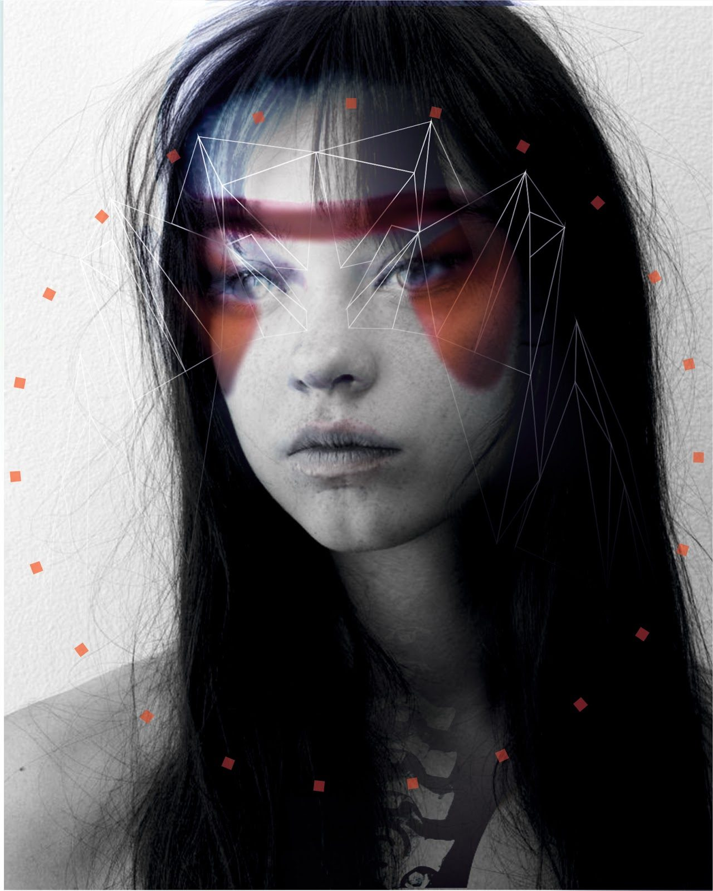
01
Self
2019
Two portraits layered into one — the face beneath, and a second face composed of digital makeup, wireframe geometry, and orange registration marks hovering across the surface. The work was made during early research into digital fashion, at a moment when the question of the avatar was beginning to feel less like science fiction and more like a description of ordinary life. If we only appear to each other through curated images, through filters and captured selves, which face is the real one — the one underneath, or the one we agree to be seen as?
The piece treats identity as something that arrives in layers, none of them removable. The tracking marks don't recognize a person; they construct one.
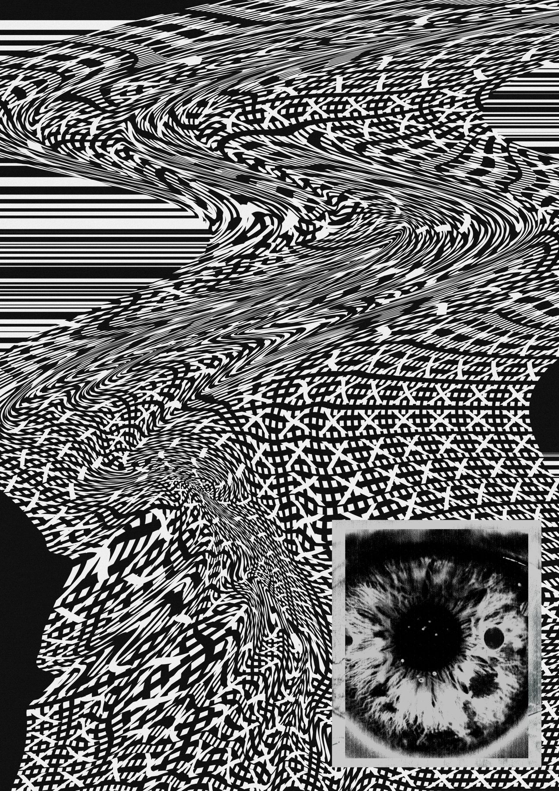
02
Residue
2025
Made for the zine's threshold between disappearance and post-human ritual — the page where the self is supposed to dissolve. The body gives way to pattern: woven interference, topographic noise, a surface that refuses to cohere into a figure. Only the eye remains intact, held in its own small frame like something pasted in from another document. A reminder that even in dissolution, some part of us stays visible to the system that watches.
The image asks whether disappearance is still possible in an era of continuous capture. The instructions in the zine propose it is. The image is less certain.

03
Vessel
2025
A face pulled out of shape — mouth, eyes, and brow sliding toward the edges of the frame as the center drops away. What remains is not a face but a hollow, and inside the hollow, a shape that resembles a figure. The features migrate outward, the self migrates inward, and something new occupies the space where a person used to be.
Placed in the zine between instructions for mutating in public and for disappearing and reappearing, the image refuses to show either. It shows the middle — the part the rituals don't describe. What actually happens to a face during transformation: it becomes a vessel for the figure that will come next.
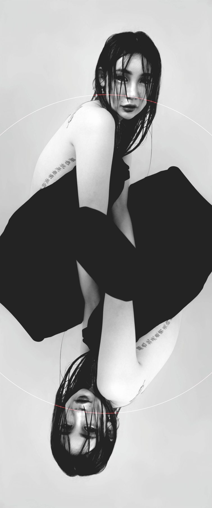
04
Reversal
2020
A figure and its inversion, held inside a circular frame, meeting at a thin red line. The image draws from tarot, where a reversed card does not negate the upright but carries a different valence of the same force — presence in another register, the same self read from the other end. Between the two figures, a shared black mass: the void that lets the reflection happen, the hinge that makes the doubling possible.
The work belongs to a period of interest in symmetry and its quiet reversals — in binaries that are not oppositions but alternating states of the same thing. 1 and 0. Void and space. Figure and shadow. The circle holds them together as a single system.
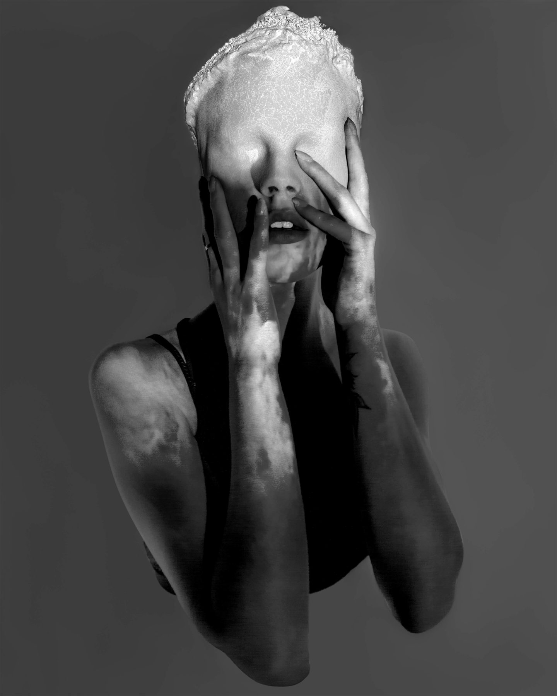
05
Cosmography I
2020
Made by projecting images onto the model during the photoshoot and combining the result with an edited photogrammetric scan of her body. The skin becomes surface in a different sense — cracked, mineral, terrain. The face is no longer a face but a topography; the skull, a small planet held between two hands.
The piece takes its cue from the Encyclopedia of the Brethren of Purity, which describes the body as a world in miniature: bones as mountains, intestines as rivers, breath as wind. The work does not illustrate this claim but attempts to perform it through the image-making process itself. Projection treats the body as a screen. Photogrammetry treats it as terrain. The two operations meet at the surface, and the body becomes, briefly, the cosmos it was said to contain.

06
Signal
2025
A face barely held together by the halftone grid beneath it. The image was warped, pulled, and disturbed until the figure dissolved into its own printing mechanism — the dots that would have made it legible now the only thing visible. What remains is not a portrait but a transmission: the body reduced to frequency, the surface reduced to weave.
In the zine the image sits between instructions for listening to signals that don't belong and for holding objects longer than necessary. It answers both at once. The face has become something you almost hear and almost touch. A signal you could reach into if the grid held still.
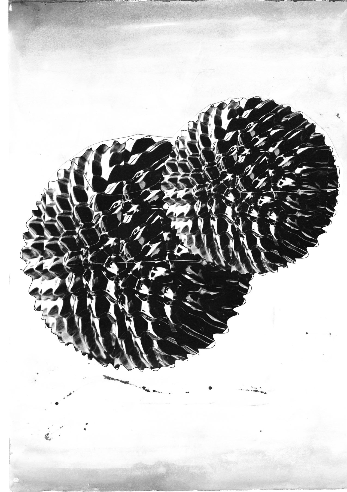
07
Field
2012
Two spheres formed from ferrofluid — a magnetic liquid that organizes itself into spiked, crystalline geometries when exposed to a field. The shape is not sculpted; it is the shape that matter takes when an invisible force is acting on it. What looks like architecture is actually response.
The image belongs to a longer interest in the body as a structure arranged by systems it cannot see. Cosmology, biology, culture, attention — all of them operate like magnetism does here: a field that gives form to whatever enters it. The sphere is not the subject of the image. The field is.
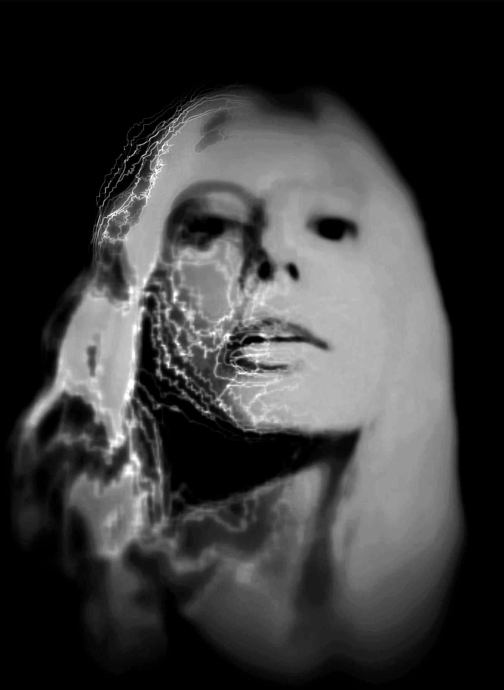
08
Self-Portrait
2019
A self-portrait, lines drawn into the face one at a time until half of it became storm. What began as a photograph turned into a map of what passes through a person: the small fractures, the weather that leaves a trace.
The image does not dramatize the damage. The face remains composed, one eye still open, the other absorbed into the dark. The lines are not wounds but evidence — the quiet geometry of things that happen and do not leave cleanly.
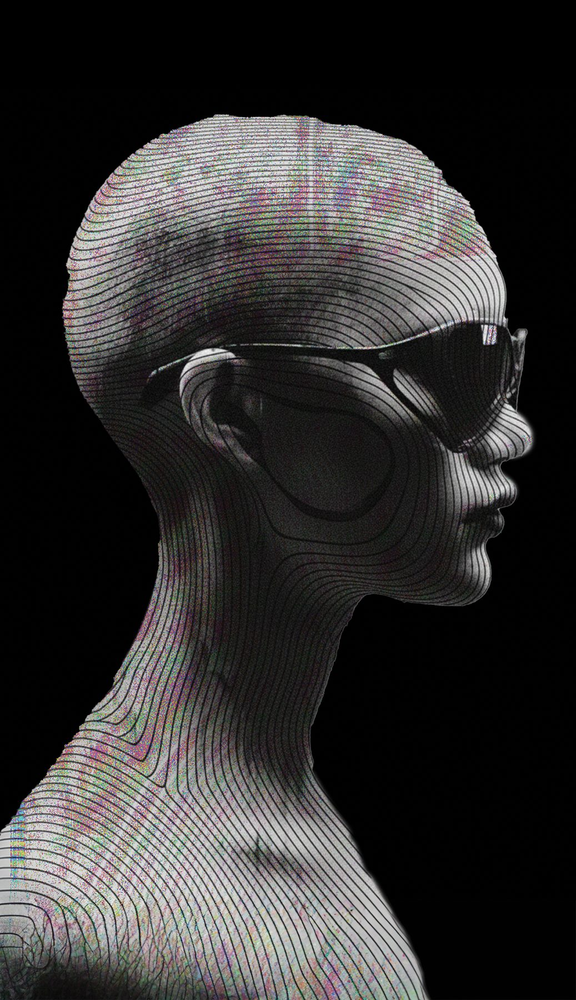
09
Contour
2025
A figure wrapped in topographic contour — the vocabulary of 3D scanning and print preview, the body translated into the slicing planes that would precede fabrication. Chromatic fringing runs through the surface, the trace of channels that did not quite align. The image sits between portrait, mannequin, and model file.Made for XULT, it holds the brand's premise in a single frame: the body as a site for computational design, a surface that arrives already measured. The sunglasses are the small refusal inside that measurement — the figure is fully scanned, but still declines to be read.
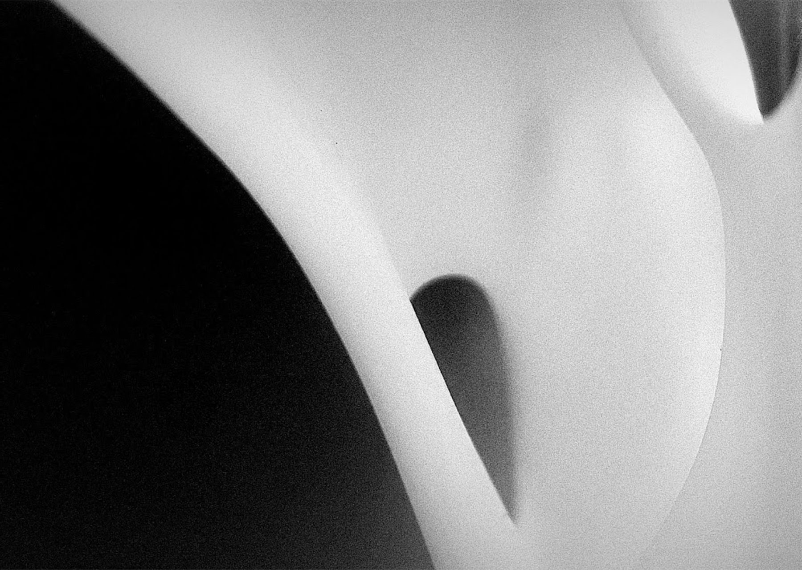
10
Soft Return
2024
A close photograph of a 3D-printed prototype, framed tight enough to read as body — a curve, a hollow, the shadow that falls into a small depression. The object began as a file and returned as a form that behaves like skin under light.
The image belongs quietly among the others. Where the rest of the work watches the body dissolve into system, this one watches a system arrive back at something like flesh.
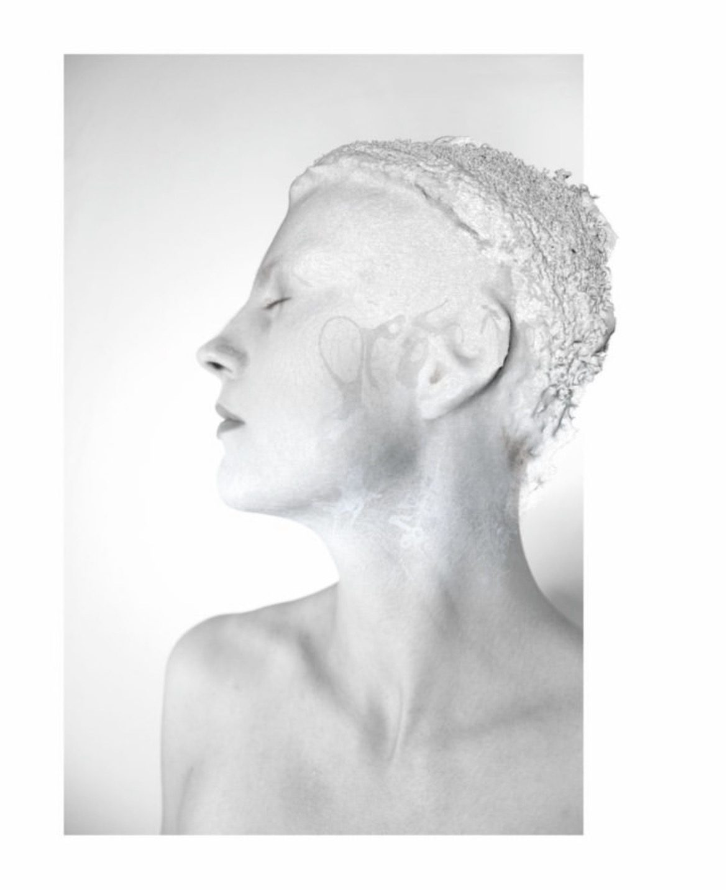
11
Cosmography II
2020
A continuation of Cosmography — the same model, the same projection and photogrammetry, but later in the process. Where the first image held the face in tension, hands pressed inward as the skin became terrain, this one arrives on the other side of that translation. The body has settled into its geography. The surface is still mineral, still cracked, but no longer in struggle. The eyes are closed. The light is high and quiet.Between the two images, the cosmological claim of the Brethren of Purity — that the body is the world — moves from an act to a condition. First the translation. Then the rest inside it.
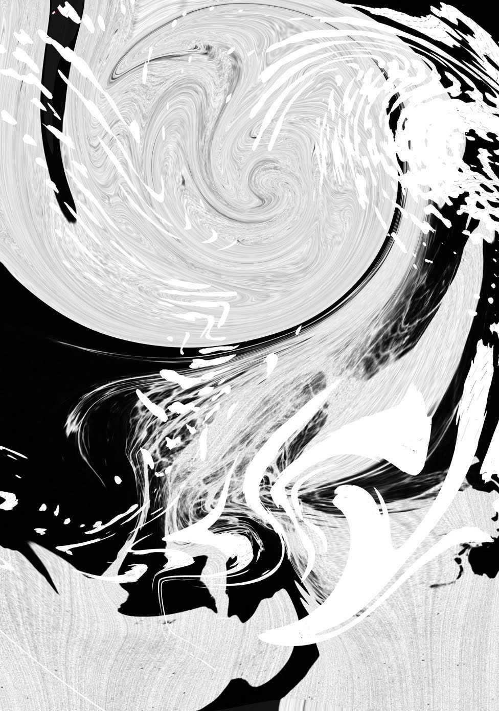
12
Turbulence
2025
No body this time. A spiral in the upper half, a churn of ink and wave below, the composition given over to movement. The image is what remains when the figure has stepped out of it — the force that was organizing the body, now visible on its own.
In the zine it sits between instructions for slipping between realities and for becoming an object. Neither state is shown. What is shown is the passage between them: the moment the self is in motion and has not yet decided what to settle into.
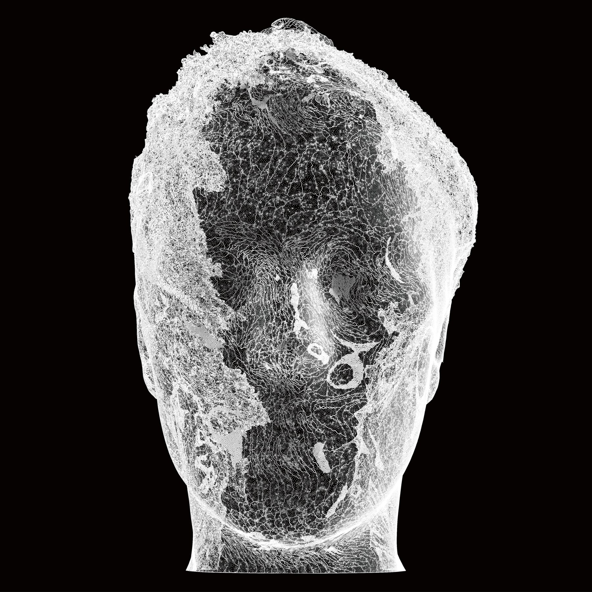
13
Cosmography III
2020
The third piece in the Cosmography series, and the one that removes the body. No photograph, no projection — only the 3D mesh of the portrait, rendered as a lattice of thousands of points on black. What remains is the geometry that would have held a face: the topology underneath the skin, the structure the body is built on before anything carries it.
Read together, the three Cosmography pieces form a gradual undressing. In the first, the skin becomes terrain. In the second, the terrain settles into rest. In the third, even the surface is gone. The cosmology remains — the body is still a world — but the world has become lace. A dense weave of connections where a person used to be.
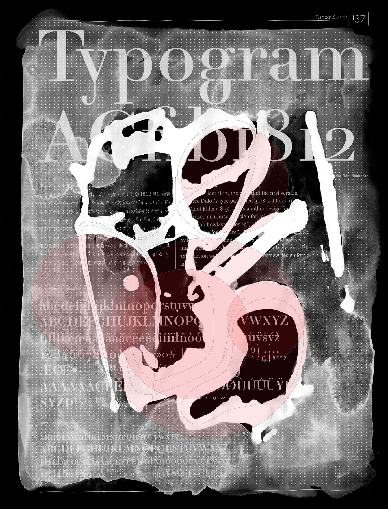
14
Typogram
2020
A page from a typography specimen — Didot Elder, 1812, its complete character set laid out as a rational grid — with ink poured across it, photographed, and inverted. The ink becomes a white gesture over the letterforms, and the circles beneath read as cells or planets depending on how you look. The shapes in the center are architectural form-finding by accident: what the liquid became when it was allowed to become anything.
The image puts two systems in the same frame and lets them occupy each other. The printed page is the infrastructure. The ink is what infrastructure cannot predict. Between them, the body enters as the thing that pours.
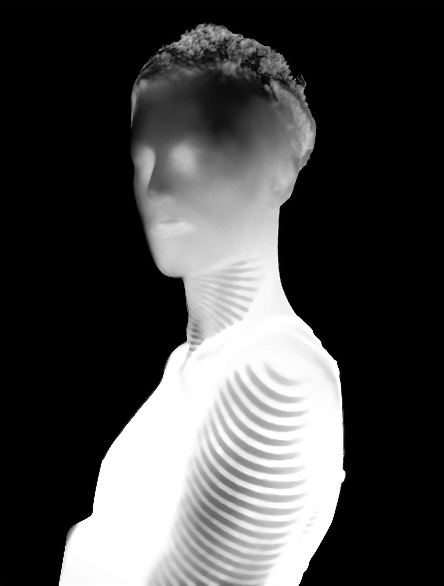
15
Cosmography IV
2020
The fourth and final piece in the Cosmography series. The face softens almost to absence — features suggested but not held — while concentric waves radiate outward from the neck and shoulder, as if the body were the source of something moving into the space around it. The hair keeps the mineral texture of the earlier pieces, but the body itself has become a wave.
Where the first three pieces read the body as terrain, resting surface, and structure, this one reads it as transmission. The Brethren of Purity describe breath as wind, words as thunder, sounds as thunderbolts — the body does not only mirror the cosmos but sends into it. The image takes that claim literally. The self is no longer a landscape being mapped. It has become a source.